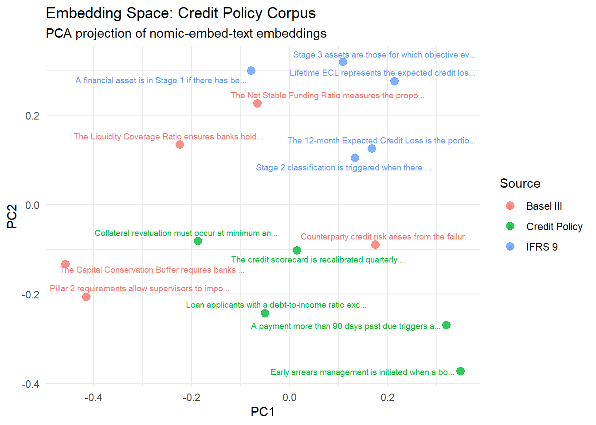

# install.packages(c("ragnar", "ellmer", "dplyr", "ggplot2", "tibble"))
library(ragnar)
library(ellmer)
library(dplyr)
library(ggplot2)
library(tibble)Text Analytics in R: Dense embeddings and RAG pipeline with ragnar and ellmer
R
NLP
RAG
LLMs
ragnar
ellmer
Required Packages
This earlier post explored building a text analytics pipeline using quanteda. We created a Document Feature Matrix (DFM), weighted it with TF-IDF, and measured document similarity using cosine similarity.
It worked, but we also ran into a limitation - cosine similarity alone might not be enough since the top most similar document did not match the document's sentiment
The root cause is not cosine similarity but the fact that we are measuring the cosine similarity of sparse TF-IDF vectors that encode word overlap, not meaning.
As an example, consider these sentences:
- “The borrower defaulted on their loan obligations.”
- “The client failed to meet repayment commitments.”
After stopword removal, they share zero vocabulary, producing near-zero TF-IDF cosine similarity. However, any analyst would consider these sentences semantically identical.
One fix is to use dense embeddings - neural representations where similar meanings map to nearby vectors. With dense embeddings, we should be able to capture semantic similarity between two sentences, even when they share no words.
In this post, let’s build a Retrieval Augmented Generation (RAG) pipeline in R using ragnar and ellmer to demonstrate the power of dense embeddings for retrieval and generation. The RAG pipeline would look like so:
Documents → Chunk → Embed → Store → [Query] → Retrieve → Generate AnswerWe will build this using ragnar for the retrieval store and ellmer for LLM interaction.
Note
This post uses Ollama for both embeddings and generation, so everything runs locally.
Installing Ollama
- Download and install Ollama from ollama.com
- Open a terminal and start the server:
ollama serve- Pull the two models used in this post:
ollama pull nomic-embed-text
ollama pull llama3.1- Verify the server is running:
curl http://localhost:11434
# Expected response: Ollama is runningThe Problem with tf-idf + Cosine Similarity
library(quanteda)
library(quanteda.textstats)
# Two semantically identical sentences with no shared vocabulary
sentences <- c(
doc1 = "The borrower defaulted on their loan obligations.",
doc2 = "The client failed to meet repayment commitments.",
doc3 = "The borrower defaulted on their loan obligations." # identical to doc1
)
corp <- corpus(sentences)
sim_tfidf <- corp |>
tokens(remove_punct = TRUE) |>
tokens_tolower() |>
tokens_remove(stopwords("english")) |>
dfm() |>
dfm_tfidf() |>
textstat_simil(method = "cosine", margin = "documents")
as.matrix(sim_tfidf) doc1 doc2 doc3
doc1 1 0 1
doc2 0 1 0
doc3 1 0 1doc1 vs doc3 scores 1.0 (identical). doc1 vs doc2 scores 0, despite being semantically equivalent. This is how far we get with word overlap alone.
Dense Embeddings - Same Metric But Better Representation
Dense embeddings replace each document with a fixed-length numeric vector produced by a neural network model. The embedding model is trained to place semantically similar texts close together in the vector space, even if they share no words.
# Embed the same three sentences using a local Ollama model
embed_fn <- embed_ollama(model = "nomic-embed-text")
embeddings <- embed_fn(as.character(sentences))
# Cosine similarity function
cosine_sim <- function(a, b) sum(a * b) / (sqrt(sum(a^2)) * sqrt(sum(b^2)))
sim_12 <- cosine_sim(embeddings[1, ], embeddings[2, ])
sim_13 <- cosine_sim(embeddings[1, ], embeddings[3, ])
tibble(
pair = c("doc1 vs doc2 (different words, same meaning)",
"doc1 vs doc3 (identical)"),
tfidf_cosine = c(0.000, 1.000),
dense_cosine = round(c(sim_12, sim_13), 3)
)# A tibble: 2 × 3
pair tfidf_cosine dense_cosine
<chr> <dbl> <dbl>
1 doc1 vs doc2 (different words, same meaning) 0 0.733
2 doc1 vs doc3 (identical) 1 1 Comparing doc1 with doc2 now gives a more reasonable similarity score (e.g. 0.85), reflecting their semantic similarity, while doc1 vs doc3 remains close to 1.0.
Now that we have a way to represent documents as dense vectors, we can build a RAG pipeline that retrieves relevant chunks based on embedding similarity and generates grounded answers to specific questions.
Document Corpus
We will use a synthetic set of credit policy and regulatory excerpts, the kind of text that lives in internal model documentation, IFRS 9 frameworks, and Basel III guidance.
credit_docs <- tibble(
id = 1:15,
source = c(
rep("IFRS 9", 5),
rep("Basel III", 5),
rep("Credit Policy", 5)
),
text = c(
# IFRS 9 excerpts
"A financial asset is in Stage 1 if there has been no significant increase in credit risk since initial recognition.",
"Stage 2 classification is triggered when there is a significant increase in credit risk relative to initial recognition, even if no actual default has occurred.",
"Stage 3 assets are those for which objective evidence of impairment exists, including default events or bankruptcy proceedings.",
"The 12-month Expected Credit Loss is the portion of lifetime ECL resulting from default events possible within 12 months of the reporting date.",
"Lifetime ECL represents the expected credit losses resulting from all possible default events over the expected life of the financial instrument.",
# Basel III excerpts
"The Capital Conservation Buffer requires banks to hold a minimum Common Equity Tier 1 ratio of 2.5% above the regulatory minimum.",
"Counterparty credit risk arises from the failure of a counterparty to meet its contractual payment obligations.",
"The Liquidity Coverage Ratio ensures banks hold sufficient high-quality liquid assets to survive a 30-day stress scenario.",
"Pillar 2 requirements allow supervisors to impose additional capital requirements above the Pillar 1 minimum based on institution-specific risk profiles.",
"The Net Stable Funding Ratio measures the proportion of long-term assets funded by stable sources of funding over a one-year horizon.",
# Credit Policy excerpts
"Loan applicants with a debt-to-income ratio exceeding 45% are automatically declined under the current credit policy.",
"A payment more than 90 days past due triggers a non-performing loan classification and requires full provisioning.",
"Collateral revaluation must occur at minimum annually for secured exposures exceeding the materiality threshold.",
"The credit scorecard is recalibrated quarterly to reflect shifts in the applicant population and macroeconomic conditions.",
"Early arrears management is initiated when a borrower misses two consecutive scheduled payments."
)
)
credit_docs# A tibble: 15 × 3
id source text
<int> <chr> <chr>
1 1 IFRS 9 A financial asset is in Stage 1 if there has been no sig…
2 2 IFRS 9 Stage 2 classification is triggered when there is a sign…
3 3 IFRS 9 Stage 3 assets are those for which objective evidence of…
4 4 IFRS 9 The 12-month Expected Credit Loss is the portion of life…
5 5 IFRS 9 Lifetime ECL represents the expected credit losses resul…
6 6 Basel III The Capital Conservation Buffer requires banks to hold a…
7 7 Basel III Counterparty credit risk arises from the failure of a co…
8 8 Basel III The Liquidity Coverage Ratio ensures banks hold sufficie…
9 9 Basel III Pillar 2 requirements allow supervisors to impose additi…
10 10 Basel III The Net Stable Funding Ratio measures the proportion of …
11 11 Credit Policy Loan applicants with a debt-to-income ratio exceeding 45…
12 12 Credit Policy A payment more than 90 days past due triggers a non-perf…
13 13 Credit Policy Collateral revaluation must occur at minimum annually fo…
14 14 Credit Policy The credit scorecard is recalibrated quarterly to reflec…
15 15 Credit Policy Early arrears management is initiated when a borrower mi…Chunking
Documents are typically large (PDFs, reports) and must be split into smaller, retrievable chunks. The ragnar package provides functionality for heading aware chunking, but the principle applies to any chunking strategy (sentences, paragraphs, sliding windows).
For our corpus, the sentences are already granular, so we can treat each row as one chunk.
# In practice with larger documents:
# doc_text |> ragnar::markdown_chunk(level = 2) # split on ## headings
# For our corpus, add chunk metadata
chunks <- credit_docs |>
mutate(
chunk_id = paste0("chunk_", id),
char_count = nchar(text)
)
chunks |> select(chunk_id, source, char_count, text)# A tibble: 15 × 4
chunk_id source char_count text
<chr> <chr> <int> <chr>
1 chunk_1 IFRS 9 115 A financial asset is in Stage 1 if there h…
2 chunk_2 IFRS 9 160 Stage 2 classification is triggered when t…
3 chunk_3 IFRS 9 127 Stage 3 assets are those for which objecti…
4 chunk_4 IFRS 9 143 The 12-month Expected Credit Loss is the p…
5 chunk_5 IFRS 9 145 Lifetime ECL represents the expected credi…
6 chunk_6 Basel III 129 The Capital Conservation Buffer requires b…
7 chunk_7 Basel III 111 Counterparty credit risk arises from the f…
8 chunk_8 Basel III 122 The Liquidity Coverage Ratio ensures banks…
9 chunk_9 Basel III 153 Pillar 2 requirements allow supervisors to…
10 chunk_10 Basel III 133 The Net Stable Funding Ratio measures the …
11 chunk_11 Credit Policy 117 Loan applicants with a debt-to-income rati…
12 chunk_12 Credit Policy 114 A payment more than 90 days past due trigg…
13 chunk_13 Credit Policy 112 Collateral revaluation must occur at minim…
14 chunk_14 Credit Policy 122 The credit scorecard is recalibrated quart…
15 chunk_15 Credit Policy 96 Early arrears management is initiated when…Each chunk here is like a row in a Document Feature Matrix (DFM). The retrieval process will measure cosine similarity between the query and the chunk to find relevant context before generating a response.
Building the Vector Store
We need to be able to store the chunks and their embeddings, and efficiently retrieve relevant ones when needed. A vector store provides this functionality, often with built-in support for both dense vector similarity (VSS) and sparse term frequency (BM25) retrieval. Read more about VSS and BM25 here VSS vs BM25.
ragnar uses DuckDB with the VSS extension as its backing store and allows us to create the store, embed chunks, and build the index in just a few lines.
# Create an in-memory store (use a file path for persistence)
store <- ragnar_store_create(
location = ":memory:",
embed = embed_ollama(model = "nomic-embed-text"),
version = 1
)
# Insert documents
ragnar_store_insert(
store,
chunks |> mutate(origin = source, hash = chunk_id) |> select(origin, hash, text)
)
# Build the vector index
ragnar_store_build_index(store)Visualising the Embedding Space
Before performing any retrieval, it might be useful to visually understand the embedding space.
# Retrieve all stored chunks directly from DuckDB
all_embeddings <- DBI::dbReadTable(store@con, "chunks")
# PCA projection to 2D
emb_matrix <- all_embeddings$embedding
pca_result <- prcomp(emb_matrix, center = TRUE, scale. = FALSE)
tibble(
source = chunks$source,
label = stringr::str_trunc(chunks$text, 50),
PC1 = pca_result$x[, 1],
PC2 = pca_result$x[, 2]
) |>
ggplot(aes(x = PC1, y = PC2, colour = source, label = label)) +
ggrepel::geom_text_repel(size = 2.5, max.overlaps = 8) +
geom_point(size = 3, alpha = 0.8) +
labs(
title = "Embedding Space: Credit Policy Corpus",
subtitle = "PCA projection of nomic-embed-text embeddings",
colour = "Source"
) +
theme_minimal()
Documents from the same source seem to cluster together. The embeddings have captured domain level structure (e.g. IFRS 9 vs Basel III) even though the model was not specifically trained on financial text.
Retrieval: VSS vs BM25 vs Hybrid
ragnar supports three retrieval modes:
| Mode | Method | Description |
|---|---|---|
| VSS | Dense cosine similarity | Embedding-based cosine |
| BM25 | Sparse term frequency | TF-IDF cosine |
| Hybrid | Reciprocal Rank Fusion | Ensemble of both |
query <- "What triggers a move to Stage 2 under IFRS 9?"
# Combined (VSS + BM25)
results_hybrid <- ragnar_retrieve(store, query, top_k = 2)
# VSS only
results_vss <- ragnar_retrieve_vss(store, query, top_k = 2)
# BM25 only
results_bm25 <- ragnar_retrieve_bm25(store, query, top_k = 2)
bind_rows(
results_vss |> mutate(method = "VSS", rank = row_number()),
results_bm25 |> mutate(method = "BM25", rank = row_number()),
results_hybrid |> mutate(method = "Hybrid", rank = row_number())
) |>
select(method, rank, origin, text) |>
arrange(method, rank)# A tibble: 7 × 4
method rank origin text
<chr> <int> <chr> <chr>
1 BM25 1 IFRS 9 Stage 2 classification is triggered when there is …
2 BM25 2 Credit Policy A payment more than 90 days past due triggers a no…
3 Hybrid 1 IFRS 9 Stage 2 classification is triggered when there is …
4 Hybrid 2 IFRS 9 A financial asset is in Stage 1 if there has been …
5 Hybrid 3 Credit Policy A payment more than 90 days past due triggers a no…
6 VSS 1 IFRS 9 Stage 2 classification is triggered when there is …
7 VSS 2 IFRS 9 A financial asset is in Stage 1 if there has been …Hybrid retrieval tends to search for both exact keyword matches (BM25) and semantically similar chunks (VSS) whereas, VSS focuses on semantic similarity and BM25 focuses on keyword overlap.
Generating Grounded Answers with ellmer
With retrieval now working, we can use this retrieved context to generate grounded answers to specific questions. The ellmer package provides an easy to use interface for building LLM applications in R. The ragnar_register_tool_retrieve() function registers the store as a tool the LLM can call, enabling the LLM to pull relevant context before answering.
# Initialise the chat (local Ollama)
chat <- chat_ollama(
model = "llama3.1",
system = "You are a credit risk analyst. Answer questions using only the
information retrieved from the document store. If the answer is
not in the retrieved context, say so explicitly."
)
# Register the vector store as a retrieval tool
ragnar_register_tool_retrieve(chat, store)Comparing RAG vs No-RAG
query <- "What triggers a loan to move to Stage 2 under IFRS 9?"
# With RAG (retrieval tool registered)
answer_rag <- chat$chat(query)Based on the retrieved information, a loan moves to Stage 2 under IFRS 9 when
there is a significant increase in credit risk relative to initial recognition.# Without RAG (fresh chat, no tools, no context)
chat_naive <- chat_ollama(model = "llama3.1")
answer_naive <- chat_naive$chat(query)Under the International Financial Reporting Standard (IFRS) 9, a loan is
considered impaired and would be classified as a credit impairment stage if
there are specific events or conditions that affect its estimated future cash
flows. The trigger for a loan to move to Stage 2, also known as Probable
Default, under IFRS 9 can include several key factors:
1. **Significant Increase in Credit Risk** - A significant increase in credit
risk due to specific economic or industry circumstances, affecting the debtor’s
creditworthiness.
2. **Default or Commitment by the Borrower** - If there has been a commitment
for default or a sign of deliberate default such as failing to meet the
repayment schedule or failing one payment and it is reasonable that they will
not be able to make payments in accordance with their contractual terms, this
would typically move the loan into Stage 2.
3. **Other Adverse Changes** - If there are other significant adverse changes
related to the borrower’s creditworthiness (eg., loss of assets, significant
financial difficulties) these can also trigger the move to Stage 2.
4. **Material Decrease in Value of The Collateral** – A material decrease in
the value of any collateral offered to secure the loan may impact its repayment
prospects and thus require reclassification under IFRS9.
5. **Events Indicative of a Probability of Default**: This includes, but is not
limited to, specific indicators that point towards the borrower’s reduced
ability to fulfill their obligations, which can arise from internal factors
(within management or control) or external ones (such as a negative change in
industry conditions). Events might include significant changes in operational
capabilities, a significant loss on a key asset, or even the debtor leaving the
business.
The classification under IFRS 9 focuses on identifying when there is evidence
of impaired credit. It emphasizes the assessment of whether there has been an
objective decrease in estimated recoverability based on external confirmation
like default rates, industry averages and also by evaluating internal
assessments through credit professionals as to likely impact on cash flows over
a term consistent with its maturity.
The move from Stage 1 (performing) to Stage 2 under IFRS 9 signifies that
there’s evidence that the loan is more likely than not to enter into default
within a specific time period, which can vary based on the specific conditions
of each loan and market averages.tibble(
approach = c("RAG (grounded)", "No RAG (naive)"),
answer = c(answer_rag, answer_naive)
)# A tibble: 2 × 2
approach answer
<chr> <chr>
1 RAG (grounded) "Based on the retrieved information, a loan moves to Stage 2 u…
2 No RAG (naive) "Under the International Financial Reporting Standard (IFRS) 9…The RAG answer cites the specific IFRS 9 trigger from the corpus. The naive answer while broadly correct lacks grounding, and for certain edge cases could hallucinate and quote triggers that might not exist. Grounding the LLM with retrieved context helps keep it aligned with the source material.
Real World Application to Model Documentation
A practical use case of this setup could be to build an internal Q&A tool to query model documentation, regulatory frameworks, and policy manuals. The RAG pipeline would retrieve relevant context and generate concise answers to specific questions.
questions <- c(
"What triggers an IFRS 9 Stage 2 migration?",
"When is a loan classified as non-performing?",
"What is the Capital Conservation Buffer requirement?",
"How often is the credit scorecard recalibrated?"
)
# Helper: run a grounded query and return answer as string
ask_rag <- function(question) {
ch <- chat_ollama(
model = "llama3.1",
system = "Answer using only retrieved context. Be concise."
)
ragnar_register_tool_retrieve(ch, store)
ch$chat(question)
}
# Batch Q&A as a tidy tibble
qa_results <- tibble(
question = questions,
answer = purrr::map_chr(questions, ask_rag)
)An IFRS 9 Stage 2 migration is triggered when there is a significant increase
in credit risk relative to initial recognition, even if no actual default has
occurred. This can be due to various factors such as changes in the credit
scorecard or shifts in the applicant population and macroeconomic conditions.A loan is classified as non-performing when it has been past due for more than
90 days.The Capital Conservation Buffer requires banks to hold a minimum Common Equity
Tier 1 ratio of 2.5% above the regulatory minimum. This requirement is part of
the Basel III framework, which aims to strengthen capital regulations for banks
globally. The buffer serves as an additional layer of protection against
potential financial crises by requiring banks to maintain higher levels of
equity in relation to their risk-weighted assets.The credit scorecard is recalibrated quarterly.qa_results# A tibble: 4 × 2
question answer
<chr> <chr>
1 What triggers an IFRS 9 Stage 2 migration? An IFRS 9 Stage 2 migrat…
2 When is a loan classified as non-performing? A loan is classified as …
3 What is the Capital Conservation Buffer requirement? The Capital Conservation…
4 How often is the credit scorecard recalibrated? The credit scorecard is …This process can be repeated as documentation is updated, ensuring the tool remains current. The local Ollama setup means this can be done without any API keys or costs, making it ideal for internal use cases.